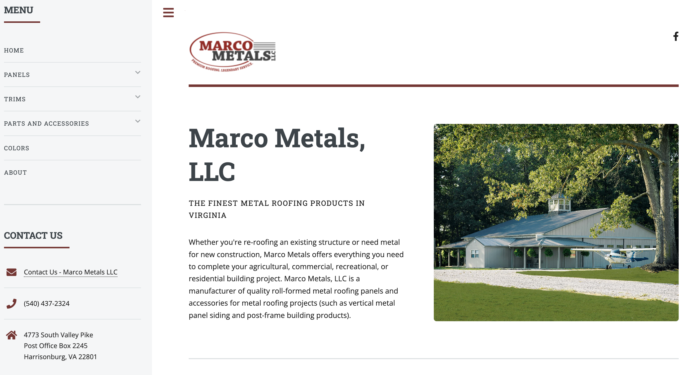
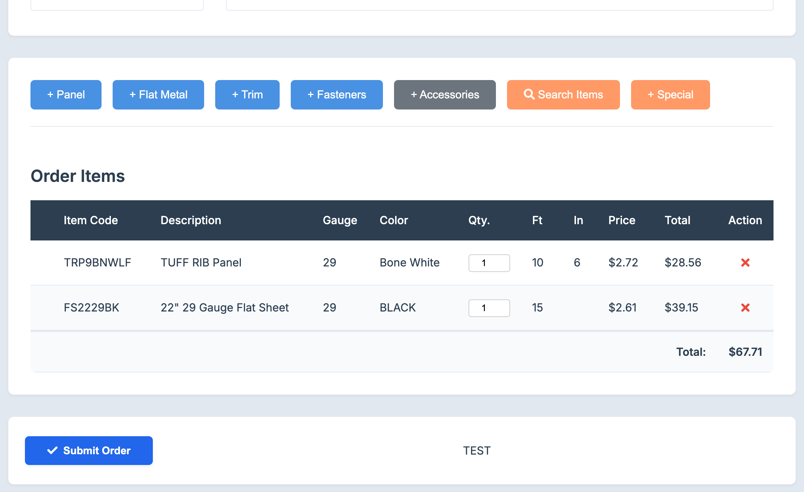

portfolio
A list of completed projects:
Marco Metals Website
Private Repository - A website I designed and continue to maintain for a private metal-manufacturing plant located in Harrisonburg, Virginia.
Launch date: 01/30/2023
Marco Metals Web Portal
Private Repository - The Marco Metals Web Portal is a custom-built application designed to streamline the ordering process for metal roofing panels and trims. Customers and internal sales teams can select and customize products based on panel type, gauge, and color, ensuring accurate and valid configurations. The system allows users to manage their orders, track order status, and view past purchases, while admins have access to an order management dashboard, inventory tracking, and reporting features. The application is built with the Flask framework and is hosted on a DigitalOcean Droplet.
Launch date: January 2025